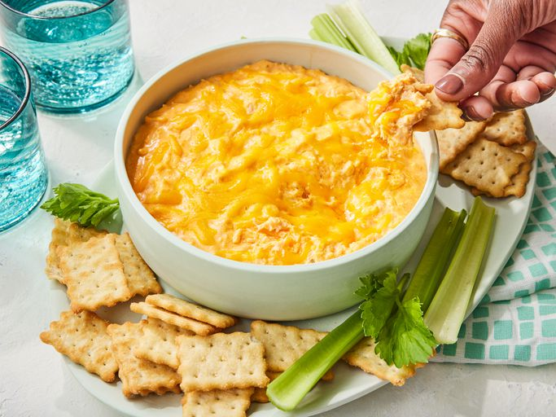

Chicken Wing Dip

A spicy chicken wing dip that's great for parties, family game nights, and even tailgates
Ingredients
- 2 lbs sharp cheddar (shredded or block)
- 16 oz cream cheese
- 24 oz chicken breast (or four cans)
- Frank's Red Hot Sauce
- Ranch
Steps
- IF USING FRESH CHICKEN: Cook by any method and shred with forks or electric mixer
- IF USING BLOCK CHEESE: Shred cheese by any preferred method
- Put all cheddar and cream cheese into a crock pot set to high
- After cream cheese is softened and most cheddar is melted, mix in chicken
- Begin to add ranch and hot sauce to taste
- The dish is completed when the dip reaches a high temperature